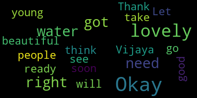

[SPEAKER_09]: To live without you will only mean heartbreak for me. ♪ I just take time ♪ ♪ And all through my coffee break time ♪ ♪ I feel around for you
[SPEAKER_04]: They're meant to be walking through the Game of Thrones landscape, but I freak out if I get a drop of rain on them. I'm like, no, you have to carry me.
[Carter]: I know how it is. I do, being a bit of a closed horse myself. All right.
[Ruseau]: Lovely, lovely, lovely. You've got water, you've got water.
[SPEAKER_09]: Okay. All right. Are we, is this it?
[Ruseau]: It will be soon. Let me see. Okay, we're good to go.
[Burke]: Quick break. I know, boots fly, yeah. Becky's a good friend of mine.
[Sundaram]: This is going crazy, you know, with the Italian prisoner, you know. Yeah, she's all over the place.
[Carter]: So, I love it. You know, we're back and forth all the time, you know, talking all the time. Oh, you talk about a good time? We haven't gone yet, but we know because, you know. Okay.
[Sundaram]: Everybody ready? Okay.
[Carter]: Good evening, friends and neighbors. My name is Terry E. Carter, and I direct elder services here at our beloved West Medford Community Center. Welcome to another live monthly presentation of First Friday's Words and Music. It is indeed the first Friday of April, and thanks to a generous grant from the Medford Arts Council, a member of the Massachusetts Cultural Council, we are back on the block at 111 Arlington Street. So we have truly hit our programming stride over the last few months, featuring a fabulous trio of authors during Black History Month in February, and an engaging portrait of Pan Am's groundbreaking blackbird stewardesses during Women's History Month in March. So tonight, as we continue to monitor the reliable advisories for COVID-19 concerns, we welcome but don't require masks. We simply ask that you be courteous to your neighbors as we move through the evening. Please turn your cell phones off or run them on the silent setting. Okay, let's try to avoid hip-hop ringtones, buzzers, bells, and whistles as best we can. Okay, so thanks also to my main man Kevin Harrington from Medford Community Media for guiding us as we broadcast to you via Facebook live stream on MCM's YouTube and on local public assets channels 9 for Comcast and 47 for Verizon. If you're out there watching on your electronic devices or your television, welcome to the show. So it's April, and that means it's National Poetry Month. Purveyors of the, yeah. Purveyors of the written verse and spoken word all over America are hitting the schools, the libraries, the corner cafes, the little theaters, and the major stages to extol the virtues of one of our oldest art forms, for the informed, the interested, the curious, and the just plain confused. And as the first and former Poet Laureate of the City of Medford, I am excited. And you probably knew that the written and spoken word would be the main order of the evening. But I have partners in high verbal crimes and literary misdemeanors tonight. Let me introduce them both to you. C.D. Collins is the City of Malden's inaugural Poet Laureate. She was named to the post in late June and has already transformed the literary landscape with workshops, commissioned pieces, and dozens of appearances across that municipality. She holds a BA and an MA in English literature for the University of Kentucky and has also pursued graduate studies at Harvard University's Extension Program in Cambridge, Massachusetts. where she studied under author Pamela Painter, who encouraged her to submit her stories for publication and became a mentor. She has published a collection of short stories called Blue Land on Polio Press, and a collection of poetry, Self-Portrait with Severed Head, yes, Ibbotson Street Press, and a novel, After Heat, on Empty City Press. As one of the originators of the resurgence of spoken word with live music in Boston in the early 1990s, Collins' work is represented in five compact discs. Her first album, Kentucky Stories, won Best Spoken Word Album at the Boston Poetry Awards, and her most recent album, Night Animals is comprised of songs and stories with her musical partner, Santone, a blind, autistic musical savant and summa cum laude graduate of the Berklee College of Music in Boston. CD's current projects include a limited edition book centered on her hometown, Mount Sterling, Kentucky. You'll hear the Kentucky come out in a minute. Titled The Little Big Town, and her sixth compact disc of spoken word with music is entitled Camargo Rain. Her literary and musical accomplishments comprise a very long list, but suffice it to say that she is a dynamic force in contemporary poetry. CD, welcome to West Medford. Next, we have my friend and the second poet laureate of this city, Vijaya Sundaram. She has been with us on several occasions, and we're thrilled to have her back in the building. A native of India, Vijaya has lived in Medford, Massachusetts for a number of years. She is a singer, songwriter, guitarist, poet, and writer who spent 17 years? as an eighth grade English teacher in the Massachusetts Public Schools. She is now a full professor of English Lit at Bunker Hill Community College. Her literary exploits are also extensive, and Medford is quickly discovering her many talents. She's been published in a number of literary magazines, such as Calliope and the Phoenix Rising Review. She has also released her first collection of poetry, entitled Fractured Lens, on Savannah Bonnevard Press. I have it. It's wonderful. You can get it. We got it right here. So in addition to her teaching duties, Vijaya has also been busy presenting workshops, sharing her songs and poems, writing for special occasions here in Medford, and continuing to bring poetry into the city's public spaces. Please welcome back Vijaya Sundaram. So the bottom line in all of this, I believe that the visual artist, the sculptor, the craftsperson, the singer-songwriter, the poet, the playwright, the musician, the designer, the actor, the grid, all of us, are simply trying to tell our story in the best way we know how, with the humble gifts we possess in a good and charitable universe. That is the most optimistic and forward-looking way that I can state it, but it's not always that hopeful and bright. Nonetheless, let me begin our conversation tonight with a bit of poetic bite, and we'll see where it lands. So I'm going to read a piece. Kill the poets first. Kill the poets first, for they will tell the truth and shame the devil in all of us. They will highlight the lack of honor among thieves with assonance, alliteration, and clever metaphor. Put them in shackles and parade them through the public square. Strip them naked, if you dare. They will expose the libertarian as a libertine amid the piles of gluttony, hubris, pride, and prejudice that lie at his gout-ridden feet. They will rightly divide the gospel in ways that the jackleg and the profligate and the snake oil purveyor conflate, confuse, and contradict at every pulpit and podium. They will measure with meter the length of the bigot's bloodline, the strength of the captor's confine, the mark of the beastly revenant, the lies who prove most fraudulent, the truth that they seek to circumvent. Kill the poets first. For their lyrics, like fine opera, will peel away the lie and tear down the malice and point out the mayhem in rhyming couplets and pecan haiku and epic odes and hip hop for the homeboys. with their black lives matter and their save the planet and their no justice, no peace. They will roll the bedrocks of the right wing of the rabbit racist and the reluctant witness back down the mountains we've scaled like the Sisyphus stone over and over and over again. killed the poets first, by the bullet in the ballot, by the garret in the glock and the guillotine in the gas chamber, by a thousand disappearing acts and a hundred hidden dungeons, by the noose from the bow of an ancient oak. That is the ultimate attention getter, a foolproof message sender, greater in gore than any artist can render, crucifixion for the commoner and the crusader. Own no allegiance to the song. Vow not to the charming verses. Smile not at the fragrant lyric. Hide not the pretty sonnet in the bowels of your heart of darkness. Kill them first. They will trick you. You will feel the pangs of your lost humanity welling up in your bosom. They will convict you, make you want to buy back your soul from the long-departed demons who made you crave sin. They will be the straw that breaks your camel's loyal back and causes your beast of burden to spur in the desert of your depravity. Don't let them hold a mirror to your faces. Don't let them shine on shameful, don't let their light shine on shameful places. Don't let them put your hounds through their paces. Don't let their judges handle your cases. Kill the poets. Kill the poets. Kill the poets first. So let's go. Let's do this. Arcee, I'm going to start with you. Will you tell us a bit about your journey from Kentucky to Malden, Massachusetts?
[SPEAKER_04]: Well, OK, so I was running away from home. And I needed to get about 1,000 miles away to get perspective on Kentucky. I became an ambassador from the South not knowing I was even Southern before I moved up here and was taking a class at Harvard and I opened my mouth and everybody was like, be quiet. I don't think she's going to be able to make a sentence. There's unbelievable Prejudice still. And people think, well, I flew from New York to Los Angeles, and I looked out the plane window, and I saw what was going on down there. It's all solid red, and it's a lot more complicated than that. So I ended up being an ambassador for Kentucky, representing the multiple voices there, the people that don't have voices there. and I found Malden, and Malden adopted me. I was available for adoption, and they adopted me, and they have affordable housing, Artist Lofts, it was a convent, and I don't know where the nuns are, they're like, we're tired, so they renovated it into Artist Lofts, and that's where it is, it's beautiful, Sacred Heart Parish.
[Carter]: Wow, fantastic, fantastic. We'll get back to that. But I want to give Vijaya the same opportunity in a different way. What brought you here from India? And how was it settling into the greater Boston area for you?
[Sundaram]: I remember we talked about this in a previous incarnation here, but for this audience, I came to India in 1988, in December of that year, and with my husband, Warren Sanders, and the two of us were broke and young and newly married. We came here because we'd just gotten married in India and his parents wanted to see us. So we came to visit. But his father very quickly convinced us to get me a green card. And at that time, I had no plan to stay. I mean, I had my job. I was on leave of absence from my job in India. And they had promised to hold it for me. But my father-in-law said, nonsense, in his characteristic way. And he kept me here. Well, he didn't keep me here. My husband and I made a lovely life here. And both of us are musicians, and we toiled through the temp jobs and the warehouse working jobs that I did at Rounder Records and all sorts of other things. And I remember my father said, you have a master's in literature. Why don't you teach? And I said, oh, this is America. I don't know anything. I'm just going to start right at the bottom, as most immigrants do. And I did. And so I picked, packed, and shipped records on the floor extremely hard floor of Rounder Records. And that I did for about a year and a half. I became crew chief and then I became production assistant and legal assistant. I knew nothing about the law, but I became a legal assistant because they wanted one. And then I became all kinds of assistants and I said, I'm tired of this business. And I loved Rounder. I loved working there. We were all wannabe music stars. None of us became music stars. We just loved music, and we served the cause. And it was really an eccentric place. I had my education there, my first education of this country there. I remember coming home, crying, saying, I hate this country. Everybody's using swear words. I had grown up in a convent, not in a convent, but I went to a day school, convent school in India. I didn't even know the F word. I'd never heard it. I was in my 20s. I'd never heard it. So I was an innocent, and I quickly became depraved. But so, you know, I got tired of it after a while and went to Lesley University. Then it was Lesley College, and I got my master's in education, and then Immediately after that, I got a job teaching in the public school where I stayed for 17 years. And one of the people here is from that place. Hi, Becky. And so that was something. But that job was exhausting. After 17 years, you just give, give, give, give, give. And you have no time. You're dying of exhaustion. So I stopped. And I said, that is enough. And I homeschooled my daughter. I had been doing it from the beginning. But I did it full time. And then the urge to teach. came again and I joined Bunker Hill Community College. This is my entire life story here. As an adjunct and then became full-time. I'm an actual assistant professor, that's the low rung. And you become full professor after six years. But I'm on the lower rungs of that. But still, full-time. I'm on the tenure track, so that's good. So my husband and I moved from Arlington to Medford in the year 2001, just a month before 9-11 happened. And we've lived there ever since. And I remember thinking, what a big house. It's a very normal, ordinary, middle-income house. But for me, that was huge. And I thought, maybe I can hide a refugee family in the Attica and another refugee family up there. I was heartbroken when the Afghan war began. So that's a different story. Wow. I've lived there for a long time. Thank you.
[Carter]: Long story short. Thank you. Thank you. Thank you. Wow. Fantastic. Fantastic. So we have former and current three Poet Laureates in the room. You're not going to get this anyplace else. I'm just telling you right now. So I want to ask you, Sidi, how are you enjoying your new role as Malden's first Poet Laureate?
[SPEAKER_04]: Gary Christensen, the mayor, he called me, he said, okay, we have selected you as the Poet Laureate. Your first assignment is due in two days, and you're going to write a poem for the Malden High School graduating class. And it has to be very specific about them. And I said, I need like five months for an occasional poem. And he goes, I'll see you Sunday. So we, can you die of writing a poem, you know, like 48 hours later? I go in and deliver the poem, and they're incredible. The graduating class, just unbelievable, huge class, and I felt a very warm welcome from them. One idea that I had was to teach workshops. It's a very diverse town, as you know, and to go to different organizations and offer my services to teach workshops and then I gave a Presentation for City Council you guys want me to do a poem for you call me and I'll do a poem and I did a poem this morning because we had a grand opening of the bike kitchen and And the bike kitchen is, you can go, you can take your bike. It's, it's a, what are those things called? It's like a, it's like a tin box. Like it's kind of like a, a trailer in context. And it is, they, you can go there and they, they fix your bike for next to nothing. So I, I did a poem there. Wherever they want me, I shall go. This is it. This is it. And I did want to say that I taught high school also, and at one point, one of my students came up, and she looked like Carrie Fisher in Star Wars, and she just had this look, and she goes, it's time for you to go be a writer. We've loved having you go be a writer. So I took a year's leave of absence from Kentucky, from teaching, and then I stayed.
[Carter]: Wow, wow, fantastic, fantastic. Quick story, so I have been, you know, snooping around in Malden for a couple years now, you know, and, you know, they have asked me to come and do a couple of things, and so I've gotten to be, you know, if not friends, at least good acquaintances with Gary, and he says to me, we're getting one of you. And I said, well, I don't know if you can get one of me per se, but you can definitely get a Poet Laureate. And I told him, I said, and if you need any help in terms of process or anything like that, I'll help you. So if I had anything to do at all with you becoming the Poet Laureate of Malden, I'm better for it.
[SPEAKER_04]: All right, and you are highly regarded in Malden.
[Carter]: I stay out of trouble there.
[SPEAKER_04]: Well, your name is on everyone's lips, you know, it really is.
[Carter]: Thank you, thank you very much.
[SPEAKER_04]: Okay, Vijaya, so... And you too, coming up.
[Carter]: Yeah. Your first year as the second Poet Laureate of Medford, what's it been like for you so far?
[Sundaram]: Thank you. You're welcome. It's been great. The first few months, I didn't have much to do. I mean, except you called me, and you interviewed me, and a couple of people interviewed me. But then in January, everything took off. That's right. So the mayoral inauguration, I had to write an occasion poem. And I had never done poetry on demand. And I had the same panic. I mean, I literally wrote it three days before it was meant to be read. And I was really happy with it.
[Ruseau]: It was beautiful.
[Sundaram]: I enjoyed writing it. But I thought, OK, because you have to write. and be true to your voice, you cannot fake it. You have to connect it to what's happening and you want to inspire along the way and feel inspired. It should not be a drudgery. It should be something lovely for you. Anything you look back on, anything you produce, you should feel happy about. So I had to do that. And that was a really great lesson. And then I had to write a poem for the Martin Luther King Jr. thing. And that too, I had so much fun writing for the occasion, had not done that. And then one for the Community Preservation Act. And then my college called me and asked me to do one for Black History Month. And I wrote one for that. Yeah, I think I read the one that I wrote for your occasion on that occasion. But mostly I wrote everything on demand. It was amazing. And recently I started a workshop call it Poetry Club for adults and for teens. The teens have not shown up, and it's my fault. It's a Friday, who's going to come? But the grown-ups are starting to come in. We've had three or four at each point, and they're coming. And next time I do this, next semester, I might change the day. And so that'll be good. But it's been fun. I've really enjoyed it. Fantastic.
[Carter]: I'm glad you're enjoying it. I'm glad you're enjoying it. I've heard nothing but good things about your tenure thus far. CD, so I am going to prevail upon you. Talk a little bit first about your focus, you know, what you're focused on writing these days, and then will you read a few pieces for us?
[SPEAKER_04]: I write like a, like a crazy person and just it comes out and I don't know what it's gonna be. I write like that and then it comes out this big mess and then I bring in the critic and I revise it. And so I, I write on many subjects, but I, I did realize that, that I am, even though I ran away, I'm a child of, of my hometown and of Kentucky, and I do want to represent it. And I, I want to say also, we found out we could write occasional poems. We didn't know. We found out. So shall I? Okay.
[Ruseau]: All right, I think I need to take off my, I need to get ready for this.
[SPEAKER_04]: A decade from now, when everyone works either for Starbucks or Amazon, when Jeff Bezos has been coronated king, I'll be down south in a compound like Jim Jones or David Koresh. except my followers will be nomadic cats who smoke burly wood pipes and tattered dogs who never get dental checkups. And my religion will be horticulture, carrots, sweet corn, and bush beans called Kentucky Wonders. I will sit cross-legged and watch the sunset flare unnatural but gorgeous colors like a deer flame log which burns for hours, consumes itself without an ash, and I'll talk to my father. What I really want to say is that I miss my father's vegetable beef soup. Always a pot full. Or brown beans and cornbread fried in a cast iron skillet. Plenty. Always made sure we had something good to eat. Not mom. Her basic food groups, Sara Lee's cinnamon wedges, drip grind coffee, Jack Daniels and Kent's cigarettes, gathering in ashes as long as a philosopher's forefinger. My dad ate his soup in the den, listening to Rush Limbaugh. He didn't like the look of his dentures that student at the medical center made. He'd been so handsome, strong, built half the houses in town. Dined privately now, then came out to where my mother and I talked at the cherry dining room table and repeated everything Rush said, wheezing with laughter. Rush's jokes hit him like a two-by-four. My mother would fire rebuttals as she scanned the seed catalog. Black tulips from Holland, purple string beans and blue potatoes. She could defeat Rush Limbaugh without a pause in her page-turning, and that was the reason he did it. To hear that back talk, to Rilas, to him, this was a good time. This was conversation. There was no malicious intent when he said, I got to go meet one of my secretaries now. I'm going to a militia meeting over at Ruby Ridge, and I'm expecting Stormy Daniels at 3. Just tell her to wait in the den. What I really want to say is that I shopped for bones in Star Market in Cambridge. Beef bones sawed with a sharp blade on a January day so cold spit froze in the air. Wind boomerang words back into my mouth and burned my skin like a flat iron. Though I'm vegetarian, I bought four bones, which I roasted in a pan while sautéing onions, carrots, mushrooms in the big Dutch oven. I deglazed the bones with good red wine from Italy, added to the soup lime with the herbs, chopped tomatoes, barley, simmered it for a few hours to let the flavors blend, carried it to the new house, and fed the carpenters. What I really want to say is that I don't know who I am anymore. I have reabsorbed like mist into the ocean, shattered like the window in the witch's house, the one made of purple candy. I never knew how fragile, how brittle, how easily lost. I carry this loss like cotton candy spun with pink light inside my chest, insubstantial instead of heart meat, lungs like bagpipes. I feel the hollow on a trail after someone leaving in the snow. Please don't go. A hole like a hollow nose bullet through the third chakra, the sun, the self. Hollow nose, small at the entrance. It's going to blow your whole back. I fall into the deep, cold skies searching for my father in a blue star. I will ask him questions. What would you do, dad? And he'll say, stand up for yourself. You don't have to take any crap. Tell them all where to go. I've seen my father crawl up a man like a panther. My 5'7 father up a 6'3 man because he's stuck by the man. Bailed him out of jail, giving him a job, seeing him through. And he didn't like to be betrayed the way the man done him. My father's absence is a betrayal, too. Death is an absence I'm bound to forgive. He'd always been remote, seemed closer now in the bone marrow, in the recipes written in blue ballpoint on yellow legal pads, in the seed packets that arrive in February, square, colorful, spread across the cherry dining room table like candy promised to a little girl.
[Carter]: I don't really know what to say, but I feel like I'm supposed to say something. The imagery, your cadence, the way that you, you know, marry the poem as you're speaking it is wonderful, and I'm speechless. Malden got a good one. All right. Malden got a good one. I don't know who else was out there, but they got a good one. All right, very good. So I'm going to come back to you, Vijaya. How can I follow it up? You can. You can. You can. You can. First, what do you have on the horizon? What kinds of things are you looking to do, wanting to do, hoping to do? In poetry, yeah. Well, in life, it's the same.
[Sundaram]: I've recently become a part of Mothers Out Front, and I attended one of their meetings today, and they said, do you have any ideas? And I thought, why can't we have an open mic at the New Arts Collaborative place and find out if I can, you know, get the space, and have young people and old and middle-aged come and perform poems and songs, any number of things, speeches, relating to but not not exclusively, to climate change and climate change awareness. So I want to somehow bring in my various selves into this, the activist self, the poet self, the teacher, the... all of these. So I'm trying to figure out what the next step is. And today when I had that idea on that Zoom call, they were thrilled with it. So I thought, okay, I'm going to start approaching various places in Medford and elsewhere and see whether they'll hold open mics and maybe infiltrate colleges and, you know, and do stuff with poetry and the spoken word and speeches relating to And again, not exclusively.
[Carter]: Exclusively. Exclusive to climate change. Wonderful.
[Sundaram]: Awareness, yeah.
[Carter]: Wonderful, sounds like a great idea. Thank you. A great idea. So can I prevail upon you to read for us?
[Sundaram]: Okay, let me see. I have here a book of mine. My only book, I should be specific. The only book I've got so far, and you'd think at this age I would have many, but I was kinda shy and didn't push myself very much. You wouldn't think I'm shy listening to the way I talk, but I am actually. I hold myself back, but I'm not doing that anymore. There you go. Sure, thank you. That's right. So I have... I wish I had memorized my poems. You know, I used to do that when I was young, but I haven't done that. You're inspiring me. Thank you.
[Carter]: God bless you both, because I ain't even trying it. Sorry about that. If it ain't written in the book, I can't do it. All right.
[Sundaram]: This one is titled On Listening to Dido's or Dido's Lament for the Nth Time. It's by Henry Purcell, the piece. And the poem is, of course, my homage to him. Why does hearing a song about a story in Greek and Latin mythosphere then retold in English make me, an Indian woman, weep? Purcell makes my pulse dissolve in a sea of sadness. I come from the land of loss and suffering. I come from the land of mythology and dreams. I come from the land where mythological princes went into exile, lost their loves, learned about suffering, found God in the midst of it all, returned to their love, or had their love returned to them. There was hope there. This song is pure sorrow, and pure sorrow is hard to bear. We hide behind hope, tremble behind tropes, cliches, happy endings to stories that we seek. Hungry for something we know not what. We know that in the end, such endings are scant, for everything ends in death, even love. Yet Dido sings, broken, burning with love and betrayal, giving up all for one who deserves nothing, a narcissistic, uncaring ass. There is something beautiful, something unjust, something absurd, unfair, unbearable about such love. It has nothing to do with the man she loves and everything to do with Dido. Where's your dignity, woman? I want to cry out to her across time and mythos. You undo all that women should be, I want to tell her, my voice stern and accusing. There's another part, though, where I admire her. I will never emulate her, but I ask myself often, what must it be like to turn to ashes with lust to die for love?
[Carter]: Fantastic. Fantastic, really. So this is good. This is good. I don't have to do much. I just have to sit here and direct. OK. So this question, and I want you both to read again, but I want to ask a couple of other questions. And I'll ask you both the same question here. What do you most want our younger generations, particularly those that want to be and grow artistically, to recognize?
[SPEAKER_04]: I want them to read. And... And I want them to, as we all want, them to go outside. And I feel like right now I'm trying to save my farm. I have a farm in Kentucky and I'm trying to save it from chemical agriculture and getting that out of it. And when I went to, in the city we don't always, we sometimes forget that when it rains it's not a bad thing. It's why we're alive. and that we need to keep water in the land, we need to save our planet in such a strong, urgent way, and to feel that. That's a couple of things. Okay, they're good things, good things.
[Ruseau]: Vijaya, young people.
[Sundaram]: I echo everything that you said. I feel the same way, to read and to care about the planet. I also want them to be kinder. They are very judgmental, am I wrong? They seem more judgmental, but you know when I think back on when I was young, I too was judgmental. So I think it changes as we get older, and I want them to forgive those whom they disagree with. And there are a lot of people they cancel because of some view they hold or some other view they hold, and they never seem to want to accommodate the wholeness of a person, at least the certain age group that I have seen. And I want them to understand that a human is complex, and that there's a lot to us. And there are some bad parts, and there are some good parts, and learn to not be so unforgiving. Maybe I'm sounding really stern about this, but am I? Does it ring a bell? Yeah, absolutely. It was like Oscar Wilde said, right? When children are young, what is it? They love their parents, then they something, and then rarely do they forgive them. Then they understand them, rarely, if ever, do they forgive them. I'm misquoting, but that's the gist of it. And I think what we need to do is to learn to help them to, I'm not being, Articulate. To teach them how to be. complete human beings, and I think maybe we don't even need to do that. Maybe they'll come to it on their own, but I wanna keep reiterating it for my young students, and I've had to do that a little.
[SPEAKER_04]: There's a lot of information that's very dividing, and I think that we're all vulnerable to it, and especially young people, and to realize we're humans, we're all humans, we're together. Thank you, it was beautiful what you said.
[Carter]: I mean, we're still at a place, where, you know, our kids or the young people that we come into contact have not wholly formed yet, you know, intellectually, spiritually, psychologically. and where, you know, they're so overstimulated and over-programmed, and not always well, that it's very, very difficult for them to get out of their own way when it regards things like compassion, and tenderness, the fruit of the spirit, the Bible would call it, forgiveness, all of those things. And so I really, what you have both said really resonates with me because as I see young people around us, I'm always thinking, if there was just a way, I mean, if there was just a way to introduce you to some of the virtues that I grew up with and that I hope became a part of who I am as an adult now, I just think it would be so nice, you know, so nice. Nuclear neighborhoods like West Medford were really, really good at that. So growing up in this neighborhood made it possible for me to kind of develop the perspective that I think you're both talking about. I don't know if that would have happened had I grown up anywhere else. I honestly don't. So thank you for that. Okay, so another question, and this one again is for both of you before I have you read again. Some of the greatest lessons you've learned from your work in the literary arts, either being a writer or collaborating with other artists or writers.
[SPEAKER_04]: Go to where it is a friendly environment for you. And where you are going to be welcomed, listened to, and where they want the best for you. Because that's not true in every circle. And you can feel it, and it's not you. Go to a different place. I forgot what your question was. What was your question?
[Carter]: I don't know how you answered it, but one of the greatest lessons, and that's a great lesson, absolutely, absolutely. Vijay, the greatest lesson you feel like you've learned from the things that you've done, kind of in literature, around literature, with artists, and by yourself as well?
[Sundaram]: You would not think I'd be at a loss for words.
[Carter]: It's what I do to people.
[Sundaram]: I think engaging with other poets, for one thing, has been exceedingly inspiring for me. It's lovely. The community of poets is a different one from other kinds of communities. Not that I'm an expert on other communities, but my sense of poets is that we love each other. We love our poetry. We love hearing different voices. We inspire each other. I know I'm inspired today by both of you. And I know that that's what poetry can do. And literature, when I teach literature, I teach empathy. And that's, again, going back to forgiveness and understanding. I tell my students, and myself, I ask us, why do we do this? And through fiction, you can find the truth. Through poetry, you can come to the spirit of things. And so I learned that lesson over and over again. And that's one of the great lessons that I've learned from literature.
[Carter]: Yeah, that's the they teach you as much as you teach them. Absolutely, I love it.
[SPEAKER_04]: Can I just add this? Please. I think it was Malcolm Gladwell that said, the whole system is a broken system, publishing, et cetera. Just go 10 by 10 by 10. You don't have to be on the national stage to have an impact. You can be talking to one person.
[Carter]: Absolutely, absolutely. So while I have your attention, will you read another piece for us? Or don't even read, just say it. However it works for you.
[SPEAKER_04]: I'm going to read this. It's Death by Salad. At Kathy's Country Kitchen in Stanton, Kentucky, you start your meal with a salad. You can choose tossed, pear, macaroni salad, potato salad, deviled egg salad, cornbread salad, strawberry pretzel salad. Strawberry pretzel salad is a local favorite and here's how you make it. You break up a large package of pretzels. You melt in a stick of butter and you mix that in with your crushed pretzels. You add a cup of nuts and a few tablespoons of sugar. You punch all that down in a Pyrex pan and bake it for 10 minutes at 350 degrees. In the meantime, you make two packages of strawberry jello with as much sugar as you can possibly dissolve. You add your frozen strawberries and you refrigerate that. Then you mix a container of Cool Whip with an 8-ounce package of cream cheese and a half a cup of confectioner's sugar. You spread that mixture evenly on top of your cooled crushed pretzels. Then you pour your half-gelled jello over top of that and put it in the refrigerator to set till dinnertime. Now people, this is not a salad. But at Kathy's, it's on the salad list, so you might order it anyway. Then you have your catfish dinner with yeast rolls or Johnny cakes, mashed potatoes with brown or white gravy, corn, pudding, and of course fried green tomatoes. Now it's time for desserts. There is the usual list, butterscotch cream pie, chocolate cream pie, banana pudding, and at the bottom, the actual dessert that you will choose. Yellow cake with warm caramel sauce. The yellow cake of Kathy's Country Kitchen has the same density and longevity as the uranium yellow cake used to make fuel for nuclear reactors It has a half-life of about a thousand years, except that instead of being used to make a bomb or nuclear fuel, this yellow cake goes in your stomach. And once you eat it, your bliss is short-lived. On your way back down Levee Road, you want to die. You swear you will never eat again. But the next time, when your waiter says, yellow cake with caramel sauce, it's like a cat charming a bird. You'll want it. And as soon as you get better, you're going to order it again.
[Carter]: So blissfully irreverent, absolutely. Just wonderful, wonderful, wonderful, wonderful. Vijay, please favor us with another piece of poetry.
[Sundaram]: It seems like it's going from serious to lighthearted seems to be the case here as well. This is not in my book. This is called How to Clean Your House. Want a clean home? Snatch a dustpan and brush before the thought recedes. Start the Beatles? Rush to it. Revolver, a white album will do. Start at the kitchen, then stop. A thought strikes. Dishwasher needs emptying. What I'd do for some magic. Put dishes away. Sigh. After, while my guitar gently weeps, switch to Captain Beefheart. Golden birdie swoopin' enters your sound space, all crooked, fly irregularly around like slashes of sun on steel. Midway through dishes, remember to gaze at the birds you love so much, fluttering magically, hungrily outside the kitchen window. Stop everything. Stop. Write a poem about birds. Make sure you include the words magical and delicate. Oh, and don't forget exquisite. Scratch that. Too overdone. Yes, the hungry chickadees open up your bird feed box, scoop a couple of cupfuls, fill up that bird feeder. There, a duty done, see? Steal a moment to watch morning sun filter in through your circle of deep blue glass, like still waters of a tropical sea flowing still on your windowsill. Blue glass with crackling lines so fine you see through to it to the other side of perfection. You see how the flaw is perfection, frail passing? The flaw sings beauty, opens wide like a chasm. You fall in, enspelled. Focus for a few moments on nothing at all, so restful. And yes, something too. That swings hanging from a pine branch out in the yard, which your daughter and her best friend made with a plank of wood and ropes. Childhood has no end, save age. And nothing's impossible in the now. Let your eyes rest on the swing. Go side to side, back and forth. Will your body onto it while you watch from within your house. Feel your legs push through the air. You're free, a child for now. Remember, your dog needs her walk. Remind your spouse to take her. In mid-mid-age, we or he can use the exercise. I'll take her out later. Having sent away spouse and dog, remember you got cleaning to do. Sit down, bang out your poem, your meditation, a moral calling, a daily practice like breathing or playing music or eating calls you. Make music, make poetry, stay alive. And if someone reads, sing to her or him of what makes you dream. Offer them some of it. If they go away, be not sad. Oh, and yes, fold that laundry. Start a new pile. Clothes are so important and so annoying. Of course, I would love to run naked through tall green grass, a slim young dryad attended by butterflies in the sunlight and mischievous fairies at night. I'd collect pollen on my sun-musked body, help the dying bees. I would enrich my earth. I'd sing songs to the sun and sky and shout in joy as I fall headlong into silver streams in the rain-glutted woods. But you wouldn't. Too shy, too self-conscious, too aware of widening middle age, too aware of what's proper. But now, back to the present. Pick up brush and dustpan. Sigh. But oh wait, you have to sweep first. No vacuum for the likes of you. Too noisy, too cumbersome, too electrical, too grey. Sweep away dust from corners. Sweep the floors, the stairs. Sweep away chaos. Make a pile of dust and fluff. In the living room sits a neat, shapeless sculpture. Circle it. Admire it. The telephone rings. Always answer the telephone. It could be fortune or misfortune. You don't need to have a machine deliver that kind of news. On second thoughts, don't. Could be a robocall. Forget it. Let it ring. Add a few more lines, cut a few, then rush out to the garden before morning wanes. Gaze your fill on brave daffodils surviving wild weather, defiant. Recall Wordsworth as you do. Pleasure fills you. I awoke this morning from a dream of dancing alone. I was so young, so light, and life was so free of dust. That reminds you, come back in, collect that pile, leave no speck behind, and drop it all with a sigh into the dustbin. Good. Put the broom away. Wash your hands. You're done.
[Carter]: Wow. Wow. Wow. So what I decided, marvelous, marvelous, in bringing you both tonight is that I was neither going to be jealous, or lacking confidence. I am both right now. And it is marvelous to behold. You know, the circle of poets know. We could literally, we could do this all night. We could do this all night, but we only have them for a couple of hours, so we've got one more bit of business to go. But I want to ask you both this closing question. Vijay, I'll start with you. What excites you most about Medford's future as a great place for poetry?
[Sundaram]: I think Medford, as I said in one of those interviews, I think with Judy Harrington, she said, what do you like about Medford? And I said, it's a hidden gem. There are so many artists and writers and poets. I know some of them come to my poetry workshop, but they're already accomplished writers. And it's really nice to see who emerges And I think we're not yet connected as much as we need to be, and that's why places like the Medford Arts Collaborative are doing what they're doing, and there are places coming together, people coming together in places. I think Medford, because of its weird geography, because of random, tacked-on, suburban, But it doesn't, you know, it feels like it doesn't feel connected yet. But I feel that it's coming now with so many voices and so many musicians and artists. I'm amazed at what we have. So, yes, I'm hopeful. And I think more workshops would be nice, more open mics would be nice and things like that.
[Carter]: OK, thanks. Fantastic. Thank you. Thank you. So our sister city, Malden, what excites you most about Malden's future as a great place for poetry?
[SPEAKER_04]: Malden, there are so many people in Malden who really care about the city and who invest their time. There's so many projects going on and I feel very grateful, very fortunate that they've included me before the Poet Laureateship. I felt very included and they welcome the voices. and there's, there's a real, there's a real friendliness about the town, and I haven't found the friendliness to be in every town. When I, when I first moved here, I thought it was, was rather rough, and I was in a different area of town. I've lived in several areas, but Malden, it really has a soul. It's really got things going. We have We had MATV, now we have Urban Media Arts, and it's really a pulse of the town. So, come on over. I'm gonna come over here, y'all come over there. Absolutely. Okay. All right, thank you.
[Carter]: Thank you, thank you. All right, very good. Vijaya Sundaram, C.D. Collins. So I have thoroughly enjoyed hosting this conversation about your work in our, as I call them, sister cities. I think the future for poetry indeed is bright and exciting in Middlesex County, hired by the Mystic River. So I just want to thank you for spending a little of your Friday night me time with the city of Medford. It's been a great pleasure sharing this community space with you. Please keep on doing all the little things you're doing to stay engaged and bless the neighborhoods that you become such a vital part of. I know that your time, your talent, and your treasure is highly admired, if by nobody else, certainly by me. And to everyone watching, thank you so much for your attentiveness and your interest in our discussion. So get ready for something a little bit different, but a little bit similar on the musical side of the coin. We're gonna take a break for some special announcements and to reset the room. So you've got a few minutes. I know both Vijaya and CD both have books over at that small table over there. I've got some stuff over there too. So if you're interested, now's the chance to talk to them about their Product okay, okay, all right. Thank you. Thank you hallelujah
[SPEAKER_08]: actually, well, I was going to say maybe I can move my speaker back so that I can hear it a little bit better. Not great. I just want to turn it towards me a little bit. Or actually, you know, what if we lie it down and then it can... Oh, that's true, you can kind of wedge it up. Yeah, it's already wedge-shaped for a reason. Like that? Yeah, that's better for me. That's a lot better. Is that good? Okay, cool. Is that okay with the mic?
[ZuNkVVK6Cjg_SPEAKER_01]: Mic check, one, two. Can this? Do the vocals come over the piano? It sounds like they do. OK. Yeah, OK. Should I turn down a little bit?
[SPEAKER_08]: Make sure that you can hear yourself. Yeah, no, I can hear myself fine. Yeah, I just don't want to overpower him. So you're going to keep going for a minute? All right, I almost have everything in the order that you want to.
[Carter]: Okay, and if something comes up that you never heard of, I'm just gonna do that. Yeah, that's what I figured. I'm like, I don't know nothing about that.
[SPEAKER_08]: Okay.
[Carter]: All right ladies and gentlemen. So it's been a busy time for us here at the West Medford Community Center. We've got a bunch of stuff coming up that I do want to make note of. Tentatively, on April 27th, we will be hosting here the West Medford Community Center's annual legislative breakfast forum, where we will have elected officials from across the city, some of our state representatives as well, that will be here in a moderated forum. available and open to the public. And we also will be having our annual fundraiser, it's called Hoops and Hope, and that takes place between here and Duggar Park across the way and in conjunction with the Beck family, a basketball tournament, clinics, and a bunch of other stuff is held across the way. There are food trucks, there's music, lots of excitement. We usually have professional athletes that come as well to help the kids with basketball drills and such. It's really a good time, and so that is set for June 9th. and goes from 11 a.m. in the morning to 6 p.m. in the evening, so we hope you'll come down and check out Hoops and Hope. We're also, again, working on, and you've heard some about this, but you'll hear more over the next several weeks, about the Black Veterans Project, which we've gotten a rather insizable grant from Mass Humanities, So I personally will be looking for conversation and volunteers to help with some tasks. So if you're interested in that project, please get in touch with me. Now, in terms of the West Medford Community Center itself, we're a true non-profit. We don't get a whole lot of big grant funding from, I was thinking about all of the money that, is it Mrs. Bezos, the former Mrs. Bezos has given away? Yeah, she's giving millions of dollars to a whole lot of places, right? So if you know her, and you can give her a call and say, we could use a little bit of that lodges down here in the West Medford community, that would be really, really wonderful. And if you don't know her, but you know somebody who does know her, you can do it that way too. In any case, if you want to donate to the West Medford Community Center, if you want to become a member, you can always get in touch with us, Lisa Crossman, our executive director, at 781-483-3042 for more information about donating to the community center or membership. So we're gonna turn now, we're gonna pivot a little bit to, I always like to call it the lyrical miracle we've engaged for this evening's musical side of The Ledger. Now I have to admit, this has been one of my favorite things in the last few years. So this man right here, Jonathan Fagan, okay? He's a local pianist, he's a piano teacher, he's got serious musical credentials, and significant experience writing, composing, and erasing jazz and other forms of music. I mean, he can play anything, play the phone book and make it sound really, really good. We got together in 2020, a few months prior to his launching and convening the first Medford Jazz Festival, which is now in its fourth year? Fourth, yeah. So, long story short, he wrote some music with the intention of exploring themes of social justice and equity, and he asked me, after hearing some stuff that I had done, can't remember what it was, if I'd be interested in adding poetic expression to his melodies. And people believe me, when I tell you, I was all over that. So since that time, we've been blending jazz and poetry in a number of different venues under the umbrella of our Ally Project. Okay, we are allies. Ordinarily, we'd be with John Dalton on drums and Greg Toro on the stand-up bass, but they have other assignments this evening. So as Bill Withers used to croon back in the day, it's just the two of us. So on the first day of National Poetry Month, no April fools, no tricks, just treats. Here we go. The Ally Project featuring Jonathan Fagan on keys, on me, Terry C. on the verbal vocals. We're going to start out with a tune poem called Hard by the Mystic. They gave my people the lowlands, and not much of it, just a few streets hard by the river. Banks turned a blind eye behind the red lines, and it wasn't about the money. Class was an irresistible force. Race was a movable object. Perhaps it wasn't a written rule, but white folks knew the legal to to keep us in our place in this mystic valley space where slaves and rum and ships had built some mansions, made some millionaires, and hid some old money. So it was hard by the mystic we went. Muddy and a bit turned down. The only place where one could be brown in this ancient Middlesex County town. But we named it. We claimed it. We made it our own. Even in the heat of summer when the shores were parched and the soil was rank with the decay of aquatic alchemy, we were one with the river. We followed its flow to the lakes and the sandy beach front. On our own Jordan shore, we baptized and blessed our brothers and sisters in Christ. We caught the little fishes to go with our loaves of bread and became the teeming multitude who our Lord Jesus fed, hired by the mystic. We became community. We commanded unity. We embraced the village and raised up our children in the way they should go. As the river ebbs and flows, the tides will turn and our fortune grows. A few more streets become our home. Houses on Sharon join Kin on Jerome. From Duggar Park to the railroad tracks, the white folks make more room for blacks. The color line recedes a bit. Church and school and center fit. The ville becomes the heart of it, hard by the mystic shore. Now the worm has surely turned, and folks who left have surely learned things couldn't stay the same. That muddy mystic most days is clean. The banks are freshly cut and green. Faces once distinctly brown are not the only ones in town. These streets that once were our confines must now embrace what gentry defines, condominium culture, bedroom convenience, university sprawl, access, egress, invest, and dispossess. Now those lowlands have become the highlights of a trending city. And sometimes success isn't pretty when it's at the expense of your black and brown and tan friends. And yet, the river still turns and bends from where it begins to where it ends. The only place where one could be brown in this ancient Middlesex County town, where we named it and claimed it and made it our own. Thank you. Thank you very much. Yeah, so that's the beginning of the story, but the story continues, and it continues as the neighborhood has evolved, and the evolution is stark and pretty dramatic, and we have kind of quantified it with a piece called Gentrified. They talk about renovating, reimagining, and rehabilitating. They rave about new visions, new horizons, and new perspectives. They revel in bistros, boutiques, and boulangeries. They fairly skip to the subway stations. They bike on the painted pathways. They Uber and Lyft religiously. Everything's on trend and on point and au pair. They've codified the way they speak about what used to be urban blight, eyesores, drug dens, crack houses, tenements, and slums, the ghetto. They've modified the way they speak about what we now see. Makeovers, investment properties, B&Bs, brownstones, townhouses, condos, and co-ops. Everything's vintage, bohemian, artsy, and retro, with creative green spaces and lofted open places. Speculators bought lower than low, patiently waiting for the change, waiting for the junkies to move on, waiting for the squatters to give up, waiting for the black and brown and tan to fade. They waited for the graffiti to erode. They waited for the chain link to corrode. They waited for the families to implode. They waited for the prices to explode. They waited as they calculated. They waited as folks capitulated. They waited as folks migrated. They waited as folks evacuated. Then the realtors came and dispelled white folks' fears. The architects came and re-engineered. The designers came and changed the veneers. The builders came and the new folk cheered. Now they've moved closer to work in the city, to quartz countertops that made kitchens pretty, to charter schools, nannies, and drivers, and bike frames made with carbon fibers, to Starbucks lattes, artisanal breads, and articulated sleep number beds, to million dollar urban show places, and fewer and fewer black and brown faces. They showed us their heels when they took the white flight, then they crept back in in the dead of night. With fat bank accounts, they were IPO wealthy. Their move to displace was measured and stealthy. All the potholes smoothly paved over. Brown folks got schooled like a curry crossover. White folks doing a long-term sleepover, exclusive, obtrusive, extreme home makeover. With a spoonful of sugar, they took all the clover. Changing the context of neighborhood with subway tile and exotic wood. Harlem, Detroit, and Chicago's south side, Boston's south end surely gentrified. Emptied the church, emptied the steeple, now it's a spot for the chai drinking people. Took down the poles and the basketball hoops, now it's a park for the dog walking troops. No more rec and community center, but a new parking lot for the monthly renter. Some folks hank on, but the die is cast. The fire consumes and the torch is passed. Invisible lines are drawn again and the banks can't buy when the banks won't lend. Some folks keep their roots in the ground, but the waiting game is deep and profound. They tour the streets noting history, yet what they want is no mystery. Harlem, Detroit, and Chicago's South Side, a reoccupation is being applied to model cities that trickle down, no longer suited to black and brown. The urban sprawl that used to be the only homes we got to see is now the place for a growing infusion, is now the space that the gentry is choosing. low-rise projects slowly yield to equity building leases sealed to folks who came from far afield who won the fight when the poor folk appealed to lawyers and doctors and high-tech heroes with trust fund ones and hedge fund zeros. no preserving community, no real thought of legacy, a small plaque here, a street sign there, nothing that bronzes the atmosphere. Oakland, Brooklyn, and New Orleans, all made targets by whites with means. Even in venerable Chocolate City, the news in the district inspires some pity. killing the concept of neighborhood in ways they never understood. And now we witness the slow, painful slide as the village we built becomes gentrified. Neighborhood is a lovely thing and one of the things that we wanted to do with the Ally Project is we wanted to, while we were trying to tell the truth about some of the things that we're seeing with regard to social justice and equity and change, we wanted to make sure that we were saying some of the things that were lovely and beautiful and desirable about the neighborhoods that we have enjoyed. So I'm hoping I can find this piece of poetry to share with you because it does just that. Can I? Because I can't find it.
[SPEAKER_11]: Is it?
[Carter]: She's right. It's right here, and I just can't see it. It's right here, and I just can't see it.
[Carter]: Yeah.
[SPEAKER_08]: Yeah, that's fine. Okay. I'll figure it out. You just have to tap it to turn the page.
[Carter]: Okay.
[SPEAKER_08]: That's okay.
[Ruseau]: Okay. Thank you. Okay.
[Carter]: So I, I did a program out in, it's not Wayland. No, it's something like that. I think it was Ashland, not too long ago. And it was for elementary schoolers. And I wanted to make sure that I had poems that would resonate with elementary schoolers. And so I took a bunch of stuff, because I've written stuff for the kids upstairs. We have a resident preschool called General Dragon, so I wrote a piece for the kids upstairs, and I've written, you know, a bunch of stuff for little kids. I'm going to try and do a children's book at some point in time, but I've got to find an artist that, you know, that where our styles blend. But in any case, growing up in this neighborhood was a really, really rich experience. I was talking with CD about it earlier. It's a lovely nuclear neighborhood where all of the people that you see on that top row, it's called the West Medford Elder Photo Project. 17 and 16 are my aunt and uncle, Bill and Rachel Tanner. And number four, as you come in the doors, my father, God rest his gentle soul, Vonnie Cotter, And so I had, let's see, there's 28 pictures. Okay, I had 28 parents. And that's a conservative estimate. Everybody knew you. And if you got into any, what they referred to as devilishness or devilishment, the last thing you wanted to have happen was to have a call go to, you know, at that time I think the number was 483, you know, whatever it was, right? It was 48 something. Because then, and I came from the generation where corporal punishment was not frowned upon. I came from the switch and belt generation. Cut my own switches, and C.D. and I have this in common. She's from Kentucky, so go figure. But anyways, The last thing you wanted to have happen to you was your parents get called, you go home, you've already gotten a tum lashing in the street, then you get the real lashing when you get home. And if you get the, just wait until your father gets home, nothing but dread. Absolute dread. But anyways, we had some favorite places. The West Medford Community Center, an old Quonset hut that was toted up here from Charlestown and built on the site was the first community center. This lovely building is the second community center. But this was our second home. We spent a lot of time here. One of the other institutions for children, okay, aside from the church where our parents raised us, was called The Little Store. You about to get it all. All right. Yeah, I'm coming. I'm coming. Yeah, yeah. It was a tiny red hovel on Upper Jerome, a bit run down and rough around the edges. And Mr. Henry seemed so old to us, even then, with a lot of whiskers, impatient and a little scary. One would suspect that he didn't even like kids, but he really must have loved us, or else where did all that penny candy come from? He had all of it, no seriously. We'd bust in there with a few nickels or a handful of pennies, all loud and unruly. He'd hush us up while he finished with grown folks' business. Then he'd be back, like a black Willy Wonka up in that old shack. He'd peer over those old horn-rimmed glasses and tell us, he didn't have all day. Then he'd blow open one of those small brown craft paper bags, and get to stuffin' while we were ooin' and ironin', huffin' and puffin'. See, Mr. Henry had all the treats, all of our favorites, a hundred great sweets. Root beer barrels and pixie sticks, squirrel nut zippers and banana splits, green mint juleps and button strips, red licorice ropes and bottle nips. He had bazooka Joe bubble gum and a tiny sucker called a dum-dum, jawbreakers and Tootsie Rolls, sugary love for little kids' souls. Candy necklaces to wear and bite and waxy red lips were such a sight. Fat gum cigars and kids cigarettes right beside the crunchy six lets. Mary Jane chewies and BB bats, hot fireballs and Mexican hats. Just the genuine Hersey's kisses. All of the hits and none of the misses. Like Kit, taffy squares and Necco wafers. Liquor made and Boston baked beans. Gold rocks. Nuggets of gum in a bag, a kid's idea of sweet to swag. From cold January to chilly December, more kinds of candy than I can remember. At the Ville storefront on Upper Jerome, I knew I had to write this poem. See, Mr. Henry had all the treats, all of our favorites, a hundred great sweets. Perfect. Thank you. Thank you. See? Yeah. See, Janelle, you think back and remember, don't you? I know. I know that's right. I know that's right. I know. Well, see, now. You probably were here more so when Frank Hedden owned the store, because he basically got it after Mr. Henry kind of went by the wayside. But he called it Hedden's Variety, but it was the same store. Yeah. Well, you might, you might. Hedden's Variety, yeah. Let's go get it right now. It's in my, I got a bowl in my office. I really do, I meant to bring it out, I forgot. So when we finish, I'm gonna bring the bowl of candy out and you can get some tootsie rolls, all right? All right, so we're gonna play, it's kind of the title cut from our album project, our CD project, which is called The Ally Project. This piece is called The Ally. Friends become distant and strange, as if you have some creeping mange. Family wonders why and wrings their hands. How could you choose them over us? We're your blood, bone of your bone and flesh of your flesh. They're not like us. They're so different, less than, not equal to, beneath. Declarations have been made. Arrangements are in place. These are matters of our kin. Signs have been painted. You're going to be cast out. You're going to be shunned. You need to stick with your own kind. An ally? Is that what they're calling you? Well, it's a hard road to hoe. You're making strange bedfellows. You're casting your white pearls before swine. You weren't raised to behave like this. Our family is a proud and honored clan. We'll never be lower than any black man. There's no room for them at the table. There's always been two sides of the track, a right and a wrong side of town, our kind and their kind, your people and those folk. It's going to kill your mother and your daddy's turning over in his grave. You want to shout out Black Lives Matter, but the master plan is to make them scatter to serve them pain on a silver platter. Our people owned them. They worked this land for 200 years. They were our property. Our Negroes, hell, our Negroes to make it plain. You can't be out there with them. You can't be shoulder to shoulder with the ones we need to dominate, relegate, subjugate, eliminate. They want reparations? Well, we're making preparations to give them 40 acres of hell and a mule kick to the gut. You don't seem to get it, son. This is the way the races run. There's not enough room for everyone. The time for black and brown is done. Show your pride and pick up your gun. Pick the side that has always won. You can't be out there with them. You can't be shoulder to shoulder with the ones we need to dominate, relegate, subjugate, eliminate. My father used to say, life is hard, but fair. You had a good home, but you didn't stay there. Yeah, yeah. Let's lighten up the mood a little bit. This is called Kitchen Table Poem. And the one thing about this piece is, One of Sidi's pieces was earlier when she read, it's universal. Even if the ingredients aren't the same, everybody's in the kitchen. Okay, so this is that poem. Nobody ever wants to leave. They're like the blueberry stains on mama's apron, settled and satisfied. Good food has been eaten, fresh corn and collard greens, fried chicken and potato salad, bellies are fat and full. This is that room. Oh my God, and girl, and are you serious right now? It's real talk. We're real people. Family, you know what I'm saying? We're family. You can smell the love long before the door opens. You know there's gonna be pecan pie and the sweet tea will be ice cold. Southern folk will slip out of their northerness. Accents will thicken and a country shade will feel closer to the city sun. and they'll stay at that table long after the crumbs are cleared. The dishes will be all washed. The food will be put away or packed in Tupperware and Ziploc bags. Everyone will have a doggie bag and a story to tell. The men will be playing bitter, slapping down some Donham notes, sipping on a little something and talking big trash. The smiles will be broad and the laughter will be contagious. The women will be fanning and fussing. Good lord, she know she too big for that dress. That ain't no Sunday saved outfit. That's for Saturday night sinning. You know I'm right. Girl, you know I'm right. Nobody ever wants to leave. They're like black Jesus's eyes on that old print. Loving and insistent. Soul food has been shared. My gene has prayed down heaven and the babies sang their song. Everyone's tickled and tranquil. This is that room. I really miss pap. Mom's holding her own. And baby boy's cancer's in remission. And when you coming back to church, it's real talk. We're real people, family. You know what I'm saying? We're family. So Jonathan Fagan on the keyboards. So I'm going to deviate from the program just a bit because I think one of the things we wanted to do is we wanted to feature as many cuts as we could from the CD so that perhaps you'll be of a mind to pick up a copy. Beyond that, I mean, we poets, and C.D. knows it, and Vijaya certainly knows it, we just keep on writing, you know? We write a book, and, you know, the book is the book, and, you know, we're off to the next thing. You know, we're writing. So I wrote this piece, and Jonathan and I haven't had a chance to talk about it or play together or anything, but I really want to share it with you tonight. It's called Place, Race, and Remembrance, okay? Lamenting the loss of my touchstones and my high altars, The grade school where I learned to read and write as a condo for the first wave of bedroom community occupants. A co-op for the early adopters of IPO dividends and biotech windfalls. The place where I first heard of JFK's assassination. Everybody was crying, and we didn't even understand why. We understand now. Martin and Medgar and Malcolm gave us the lesson. But did it really take? Old Henry's Little Store has been gone for 50 years. All the penny candy is in trendy boutiques now. It's sold by the pound these days and dispensed from plexiglass tubes. High-end jelly beans come in 100 flavors, weird flavors like popcorn and Pepsi Cola. Cost a whole lot more than any penny, a whole lot more. I remember needing to be off the street before the street lights came on. We were all still doing fake karate, acting like Bruce Lee, and playing run the bases near the corner of Houghton and Monument Streets. We had to keep an eye out for the Braxton dogs. There weren't any Pitbulls or Wartwilers yet, but Butch was pretty ornery and he liked to bite folks. If you'd done something cool or been at all remarkable, you had a nickname. The roll call is still pretty long, but the absent far outweigh the present. We knew all of these cats. Fruitman, Spud, Wood, Hollywood, Smidlap, Walk, Hive, Craze, Lace, Jordash, JC, Tip, Baff, Puddin', TC, Top Cat, Junior, Lenz, Brax, Spizz, Sparrow, Wiz, Zoom, Burton, J, Willie, Wit, Walt, Fives, Wolf, Wolfie, Gogg, Sputnik, Oak, Coke, Coco, Rog, Flash, Ice, Doc, Von Eric, Gib, Bullet, Jed, Jab, Butchy, Buddy, Spanky, Ike, AD, Nelly, Wing, Monk, Snake, Lammy, Richie Rich, Hulk, Stutzy, Foot, Humpty, Rock, Mervy, Turtle, Zeke, Puka, B.A. Farm, Abu, Bruno, Bunky, Squirrel, Stoney, Barron, Skipper, Putney, Sonny, Old Henry, the General, Chinky, Stoney, Kainsey, O.G., Earl, Java, Little Charlie, Rabbit, Scooch, Turtle, and Creek. And that's just the brothers. Just the brothers. The place where we wed is a different kind of sanctuary now. The pools have become padded settees in a glitz and glass lobby. Sacred vows have been replaced by lawyers' lease agreements and HOA fees. Realtors and developers ran off the pastors, deacons, and elders. Bought off the next generation and the next and the next. The choir loft is a coffee counter. The parish is a dog park. The temple is a bohemian tea house. Dim sum through the front door, tapas through the back. My touchstones and my high altars are little more than fond memories and sad truths of loss and surrender. Occasional reunions call out to the scattered and departed. Homegoing celebrations gather the long gone and the still standing for lamentations, testimonies, collard greens, and fried chicken communions. We won't have this place for too much longer. Place, race, and remembrance are more for picture books and archives than safe harbor and inheritance. The cats with all those nicknames will surely become footnotes in a set of encyclopedias that has become every bit as obsolete in this brave new world of Siri, AI, Google, and Amazon. Song poets sang, time rewriting every line. My lyric is not a rewrite. We may not have a chance to do it all again. So this is just me waiting for the last move on the Ville's chessboard, waiting for the brothers to play that last game at the park Colonel Duggar built or the courts Cleedy Rome built. I am lamenting the loss of my touchstones and my high altars, lamenting the loss of my memories of the village, memories of the Ville. Jonathan and I, I say it all the time, Jonathan and I met at the intersection or confluence of jazz and social justice. But we make sure that we do as much jazz as possible because jazz is very cool, jazz is very cool. So we're gonna do a piece that is a kind of a paean to a jazz piece that was done by, I'm sure Herbie Hancock did it, I know Quincy Jones did it, and that piece was called, Tell Me a Bedtime Story. So this piece is called, Tell Me Another Bedtime Story. Is this where the Sandman picks up each grain, restoring the beauty, reducing the pain? Is this where we fly to Never Never Land like a troop of lost boys with Peter Pan? All of the mystery of hidden dreams, nothing now is as it seems. Tell a sweet tale that sugars and creams with flashes of stardust and shining moonbeams. As I lay down to my slumber, paint a landscape of ochre and umber. Let there be a hint of romance. Turn up the quiet. Love wants to dance. Tell me a bedtime story, please, of secret gardens and pecan trees, of babbling brooks and waterfalls, of gentle breezes that summer calls, of hidden hadens and wondrous spaces, of astral planes and mystical places. Let there be a melody that sings in four-part harmony. Let it resound in symphony, then fold into dreamland's reverie. Tell me a fable of Arabian nights, spread on a table of earthly delights, free from the labels of anger and fights, willing and able to scale higher heights. Tell me a bedtime story now, as the baby rocks in the maple bough, as the blue ox puts his nose to the plow, as the sweaty farmer wipes his brow, as each green seedling happily vows to yield each fruit that the ground allows, and seven dwarves whistle a happy tune, and sleeping beauty awakens soon. Let there be a melody that sings in four-part harmony. Let it resound in symphony, then fold into dreamland's reverie. This is the time when the sandman whispers, and seven grooms meet seven sisters, and the prairie sings an ode to love as angels release the turtle dove. For now, I lay me down to sleep and pray to God my soul to keep. Thank you. Thank you. Jonathan, faking on the keys. Truly, truly wonderful. Truly, truly, truly wonderful. Yeah, yeah. Yeah, you got skills. No doubt. OK. If you listen to the news, sometimes you do, sometimes you don't, we're in a crisis, you know, with our immigrant situation. But unless you Cheyenne, Cherokee, Shoshone, Arapaho, Iroquois, et cetera, et cetera, et cetera. We're all immigrants. We all came here from someplace else. I know my people came here from someplace else. I'm not going to say anything more about that. But that does not preclude our ability to have the wonder and the splendor of this country resonate with us in very real ways. So this is called Beloved Country. I can love this country, too. I didn't have to be born on these barney shores. I didn't have to be a son of the Pentacook, Quinnipiac, or Mohican. I didn't have to have a pilgrim pedigree or be a Connecticut Yankee from King Arthur's Court. I can be the Dahomian, the Pole, or the child of Caribbean suns and Amazon shades. I can love this country too. My green card was a welcome ticket to a new life in a new land. My passport was stamped with new hopes and new dreams. My suitcases were packed full with new aspirations and some apprehensions too. Perhaps I didn't see the harbor sign that said, give me your tired, your poor, your huddled masses yearning to breathe free, the wretched refuge of your teeming shore. Send these, the homeless, tempest-tossed to me. I lift my lamp beside the golden door. Perhaps I didn't see the lady in the lamp, but I did see the gleaming city on a hill that couldn't be hid, and my soul responded. I can love this country too. I can love its rolling meadows and its gospel songs. I can love its asphalt highways and its born-to-run boss. I can love its teeming ghetto and its urban sprawl. I can love its old spires, new minarets, and golden menorahs. But can America love me too? Can she love my hijab and henna tattoos? Can she love my Hajj, my Mecca, my Medina? Can she love my Cinco de Mayo and Dia de los Muertos? Can she love my kente cloth, dreads, twists, and locks? Can she love the skin I'm in, be it ebony, ivory, dulce de leche, or cafe au lait? Can she love me by name? Shekinah Glory, Muhammad bin Said, Anastasia Khozov, Cleophis Dorcio, Claudia Gonzalez, can she love me by name? And what if I am among those huddled masses in their wretched refuge or that homeless tempest-tossed? Will she continue to lift her lamp? Or do war and rumors of war, IEDs, sleeper cells, and faith distortions make me a pariah to be eliminated, a scourge to be annihilated, and a plague to be exterminated. I come in peace. I love this country, too. I love its boundless opportunity. I love its generosity of spirit. I love the audacity of its hope. I love its rolling meadows and its joyful songs. I love its asphalt highways and its little red Corvette. I love its teeming ghetto and its urban sprawl. I love its old spires, new minarets, and golden menorahs. I come in peace, and I love America, too. I come in peace, and I love America, too. Nice. Nice. I like that. I like that. All right. Okay, so we're going to do one piece, one more piece. We got time for one more piece. We're going to do another jazz piece. We're going to end with a jazz piece. If you're into jazz, and perhaps even if you're not, the jazz canon is really full of signature songs. There's Miles Davis, Blue Miles, and there's John Coltrane, Naima, and there's... Thelonious Monk, Epistrophe. There's so many of them. One of my favorites is a track that was made famous pretty much by, it wasn't by him originally, but it was made famous by Ahmed Jamal and it's called Poenciana. Really, really beautiful, beautiful piano piece. This is a riff on that, it's called Reprise for Poinciana, and I think it's one of our favorite things to play together, so. Perfect a fantasy in black and tan, between a Savoy ballroom and a Paris can-can. The kind of blue that doesn't get you down. It rather has you twirling round and round and round. Kind of blue, but not really. Like a conversation between Miles and Q in a smoke-filled corner, just those two, talking about the music round midnight. Miles in that miraculous horn, all gravel-voiced and full of scorn, asking Q, what made you feel like doing stuff like that? Jazz finds justice in the majesty of the blues. Take five to wonder and you'll know that this is true. Deep and delicious all over, pondered passionately in pianissimo, keeping standard time. Duke's Mood Indigo, Joe Sample's Rainbow Seeker, Errol Garner's Misty, Worshipping in Harmony, you know the melody, songs you just can't get out of your head, kind of blue, but not really. just like the woman whose name you call as the autumn leaves begin to fall, or maybe like the melody by Ahmad Jamal, Potency Ana. Last days of sun and sand and sea, you and your love and the music made three. A lyric so familiar, a song so sweet, ebony notes on an ivory sheet, new tear stains on every page, a bit of your heart in a crystal cage, kind of blue, but not really. You'll remember her most round midnight. Poinciana, fragrant, fresh wind recollections, a song reprised. Summer breeze makes me feel fine, blowing through the jasmine in my mind. Miles and Q in that smoke-filled corner, talking about taking the A train, going up to Smalls Paradise. Sassy's going to be scatting, and Hawk's band is in town doing jazz. Some real justice, marvelous, majestic, and kind of blue, but not really. You'll remember her most around midnight. Poinciana, pungent, rose-petaled pictures. A song reprise. The first time ever I saw your face, I thought the sun rose in your eyes. Fantasy perfected in cocoa and cream. Harlem nights in a Moulin Rouge daydream. The kind of blue that fills your soul and gulps your spirit and makes you whole. My Poinciana. I'll remember you most round midnight, frail fragments of love's fulfillment, kind of blue, but not really. Your song reprised. Till you come back to me, that's all I'm going to do. Poinciana, my poency. Jonathan Fagan. And I'm Terry Cotter. Thank you so much. Thank you so much. Again, there's some of our CDs over there, the Ally Project. I've got a few books, an anthology that I'm in with 21 other American poet laureates of African-American descent. It's the first time one's ever been done. And then my fifth and sixth book are over there as well. If you're interested in donating to the community center, this marvelous institution that allows us to have nice things like this. Our parents used to say to us all the time, that's why you can't have nice things. But this is a really nice thing that we're able to have in this community and that we hope to continue to be able to have forever and ever, amen. Dial 781-483-3042, speak to Lisa, donations or membership. We've got a special event coming up. It's part two of a Black Health series. It's on April, excuse me, yes. April 24th, and this one following the one on Alzheimer's in the black community, which was marvelous and extremely well attended, is Black Maternal Health. So we'd love to have you join us for that. There's one in May and one in June as well, but we'll get to those a little bit down the road. Hoops and Hope. A bunch of other stuff coming up on the horizon. So, you know, join in. Become a member. Enjoy what we have to offer here at the Medford Community Center. That's a wrap for this virtual edition. Well, it's not virtual. This live edition of WMCC's Words in Music. We're really very, very happy to be back visiting with you live and also in your living rooms and other household places. I want to thank all of our guests for allowing us to invade their spaces, showing their faces and sharing their graces. Shout out to Vijaya Sundaram and C.D. Collins for sitting down at our community table. High five virtually to my man Kevin Harrington from Method Community Media. for helping us to be live on local cable and figuring out the technical stuff and for getting us up and running on Facebook Live and YouTube and all that other. And to all of you for spending another hopefully enjoyable evening enjoying what the West Medford Community Center has to offer. Be safe out there. Continue to celebrate National Poetry Month. I started the evening out with Kill the Poets by the Evenings, and it becomes Kiss the Poets. So if you see a poet and they let you, give them a nice, you know, besame mucho. Well, high five if that's the way you roll. And, you know, that's it. That's all of it. That's my story, and I'm sticking to it. Have a great night, everybody. Thank you, Jonathan.
|
total time: 0.32 minutes total words: 51  |
total time: 0.48 minutes total words: 13 |
||
{kind=link}
{kind=link}